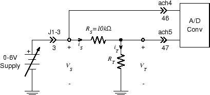
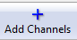
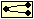

Experiment 4.2
Improved Resistance Measurement
Let's apply our new Labview skills to the task of improving the resistance/temperature measurement system we built last week.
Part A: Measure Vs
One shortcoming of last week's system is that we have to be careful to set the power supply voltage to the correct value. Since \(V_S\) appears in the formula for temperature, if this voltage is incorrect, the temperature reading will be incorrect. A much better design would be to have Labview measure the actual value of \(V_S\) and use that value in the formula.
-
Restore the connections you had in Experiment 3.2 last week with the 0-6 V output of the power supply (set to 5.00 V) connected to J1-3. Check that the circuit on your breadboard is still wired correctly. Load and run the VI you saved last week and verify that it still produces the correct reading for temperature. Vary the power supply voltage and observe that the temperature reading changes in response.
-
Stop the VI. On your breadboard, add a wire to connect \(V_S\) to
ach4, so that your circuit looks like this: -
We are now asking the A/D converter to read two different voltages simultaneously. This is not a problem for the A/D converter, but it does require us to figure out how Labview represents multiple simultaneous samples.
-
The obvious way to handle this would be to simply add another A/D block and set it to A/D Channel 4. If you try this, you will get a cryptic error message to the effect that the device is already in use. This is because all of the channels are on the same card, and the first channel which is opened has exclusive use of the device. Labview handles this by combing multiple samples into a vector, with one entry for each channel.
-
Double click the A/D block or select
Propertiesfrom the menu. This will bring up theDAQ Assistantdialog. Click on Add Channels button near the top of the panel -
Select
Voltagefrom the popup menu, then selectai4from the list of Supported Physical Channels. A new entry for ai4 should appear in the channels list. Because channel 5 appears first on the list, it will be the first element of the vector of samples and channel 4 will be the second. It won't cause problems as long as we remember the order. ClickOK. -
The block diagram looks the same as before, but now the wire is carrying two separate values. Perhaps surprisingly, this fact does not change the original operation of the VI. Subsequent blocks, expecting a single value, simply take the first element of the vector. Since we left the original signal (\(V_T\)) as the first element, everything to the right of the A/D converter block works as it did before. Start the VI and verify that this is the case.
-
Click on the wire segment coming out of the
dataterminal of theDAQ Assistantblock and pressDeleteto remove it. The remainder of the wire will become broken, since there is now no input. From theFunctionspalette, select Express \(\rightarrow\) Sig Manip \(\rightarrow\) Split Signals. Place the resulting icon between the A/D converter output and the leftmost portion of the broken wire, and click to release. -
The split signals block is expandable to accomodate the number of signals in a bundle. Place the cursor over the middle of the bottom edge and move it around until it turns into a resize arrow. Drag the bottom edge down by one increment. The resulting icon will look like a wishbone in a box.
 -
Wire the left side of the split signals block to the A/D output. The upper output is \(V_T\) (ach5). Connect it to the broken \(V_T\) wire.
-
The lower output is \(V_S\) , which will replace the constant value of 5 currently connected to the upper input of the subtract block. Delete this numeric constant block and wire the lower output of the split signal block to its previous destination.
-
Start the VI and verify that the displayed temperature value is still correct. Vary the value of \(V_S\) and verify that it remains correct.
Part B: Generate \(V\)s in Labview
Our temperature measurement system is now more accurate, but it's still very bulky since it requires the power supply in order to function. In the previous Experiment we were able to use Labview to generate constant voltages. If we were to generate such a voltage and connect it in place of the power supply, we would have a self-contained measurement system.
- Stop the VI. On your breadboard, remove the wire connecting J1-3 to \(V_S\)
and replace it with a wire connecting
dac0to \(V_S\).
-
On the block diagram, move the bottom edge of the while loop down to create room for additional components. In the resulting space add a
DAQ Assistoutput block, selectingAnalog Output,Voltage,ao0, and1 Sample (On Demand)as before. To the left of this block, place a numeric constant, set its value to 5, and wire it to the D/A block input. -
Start the VI and verify that all is well.
Part C: Smoothing
You have probably noticed that the displayed temperature is not very steady. This is due to undesired signals, or noise, finding their way into our system.
Much of what we will do in subsequent Labs, will be devoted to minimizing the effect of noise. For now we will content ourselves with the most common response to unwanted variation in data: taking the average.
Before we start to improve the situation, let's try to get a quantitative idea of how bad it is. At the moment what we know is that the displayed value jumps around a lot. Let's get a picture of those jumps.
-
Stop the VI and go to the front panel. Right click to bring up the
Controlspalette, go to Graph \(\rightarrow\) Waveform Chart. Place the resulting chart in a convenient location on the front panel. -
Use
Find Terminalor your own navigational skills to find the icon for theWaveform Charton the block diagram. Connect its input to theToutput of the formula node. -
Return to the front panel and start the VI. The chart will provide a graphic record of the variations in the temperature reading. Accumulate a few seconds of readings, then stop the VI and take a screenshot of the front panel.
-
Right click to bring up the
Functionspalette, select Sound and Vibration \(\rightarrow\) Data Evaluation \(\rightarrow\) Probability and Statistics \(\rightarrow\) Statistics. Place the resulting block between theDAQ Assistantblock and the split signals block. When theConfigure Statisticsdialog appears, selectArithmetic mean, then clickOK. Connect the output of theDAQ Assistantblock to theSignalsinput of theStatisticsblock. Connect theArithmetic Meanoutput to the input of the split signals block. -
If we were to run the VI at this point, we would get the same behavior as before. This shouldn't be surprising, since the average of a single value (the
1 Samplefrom the A/D converter) is just the original value. What we need to do is take the average of a large number of input values to produce a single output. -
Double click on the
DAQ Assistantblock to bring up the configuration dialog. UnderAcquisition Mode, change1 Sample (On Demand)toN Samples. SetSamples To Readto 1000. Since theRateis 1000 samples per second, this will give us 1000 values to average. ClickOK. -
Since the process of gathering the 1000 samples now consumes one second, the
Time Delayblock is no longer needed. Either delete it, or edit it and set the delay to zero. -
Return to the front panel and start the VI. The signal on the
Waveform Chartshould be much smoother. In fact we might be willing to believe that the variations that remain correspond to actual changes in temperature. Screenshot to compare with the unsmoothed plot. -
Stop the VI and save it in a persistent location.
Part D: Measure Illumination
Having spent considerable effort developing a system for accurately measuring temperature, we would like to leverage this technology into new market areas. Since this technology is based on the measurement of resistance, we can use it to measure any physical phenomenon for which we have a resistance based transducer. A quick search of our parts kit turns up an ideal candidate for this new venture: the CdS photocell.
-
In the circuit from the previous Part, replace the thermistor with your CdS photocell.
-
Make a copy of the VI you used in the previous part and give it an appropriate name. Load this VI and go to the block diagram.
-
Based on the information in the CdS photocell datasheet , derive a formula which gives the illumination level (in Lux) in terms of the resistance.
-
Replace the formula in the formula node of the block diagram with the one you derived in the previous step. On the front panel, change the label of the temperature display from
TtoIllumination. -
Since light can vary much more rapidly than temperature, the
Waveform Chartdisplay would be more useful with a faster update rate. Edit the A/D converter block and change theSamples To Readfrom 1000 to 100. -
Start the VI and verify that it works correctly.
-
Determine the illumination level under various conditions: under-shelf light on or off, smart phone light on or off, photocell covered, or even movement around the photocell, etc. If necessary, clear the plot by right-clicking over the display window and selecting "Clear Chart".
-
Set the VirtualBench function generator to produce a 1 Hz, 8 \(V_{ pp }\) square wave. Use BNC clip leads to connect a red LED to the output.(polarity is not important). The LED should be flashing at a rate of once per second.
-
Hold the LED over the photocell, pointing downward. Observe the resulting waveform on the
Waveform Chartdisplay. Increase the distance between the LED and the photocell and note the maximum distance at which the signal from the LED is still discernable in the displayed waveform.
This last step provides an example of an optical communication system where the signal delivered to the LED is transfered over an optical channel to emerge some distance away as the output of the photocell. This is essentially the same arrangement we used in Part C of Experiment 2.3, except we're using the photocell instead of the photodiode.
The response of the photodiode is much faster than that of the photocell, but we found that its output voltage was a distorted version of the optical input. The reason for this: viewed as a current source the photodiode's output is linear in the input irradiance, while viewed as a voltage source its output is logarithmic. We will deal with this next week by building a circuit which converts this output current to a voltage.